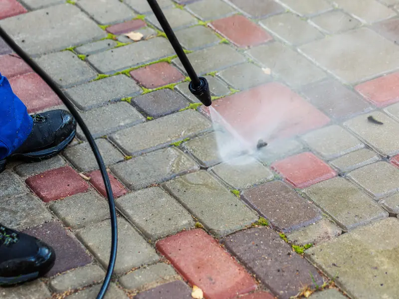

Cleveland pressure washing company
Pressure Washing by Farley, serving Cleveland, TN. Rated 5.0 from 42 Google reviews.
Photo for illustration: Cvcuk, Wikimedia Commons, CC BY-SA 4.0. Not a Pressure Washing by Farley job.

Pressure Washing by Farley, serving Cleveland, TN. Rated 5.0 from 42 Google reviews.
Photo for illustration: Cvcuk, Wikimedia Commons, CC BY-SA 4.0. Not a Pressure Washing by Farley job.
“Fast, Friendly and Fair! It was a blessing when Farley knocked on my door while serving our next door neighbor’s home. He listened to our budget and offered a great price while going with extra mile! We are ready for Spring! Five star quality and service.”
“Couldn’t have asked for a better experience and outcome! Farley was prompt in responding to me for an estimate, on time to do the pressure cleaning and my house, decks, driveway & sidewalk look brand new! The white soffit, fascia, gutters …”
“Farley and Kelvin did a tremendous job making our home look like new again! Farley’s company is professional, honest, punctual and they are perfectionists. They cleaned our entire home and even had our windows sparkling! We were …”
| Monday | 8 AM–6 PM |
| Tuesday | 8 AM–6 PM |
| Wednesday | 8 AM–6 PM |
| Thursday | 8 AM–6 PM |
| Friday | 8 AM–6 PM |
| Saturday | 8 AM–6 PM |
| Sunday | Closed |